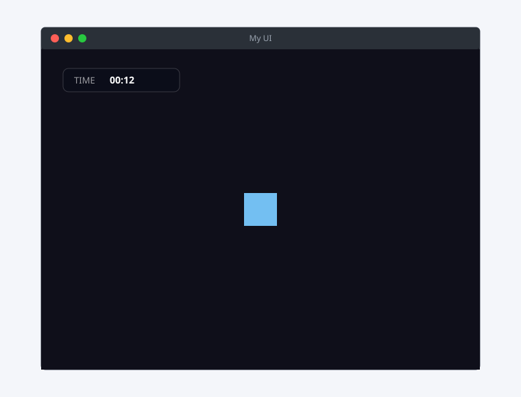
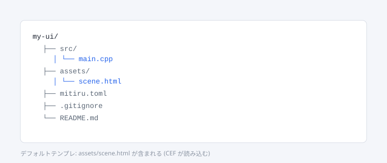
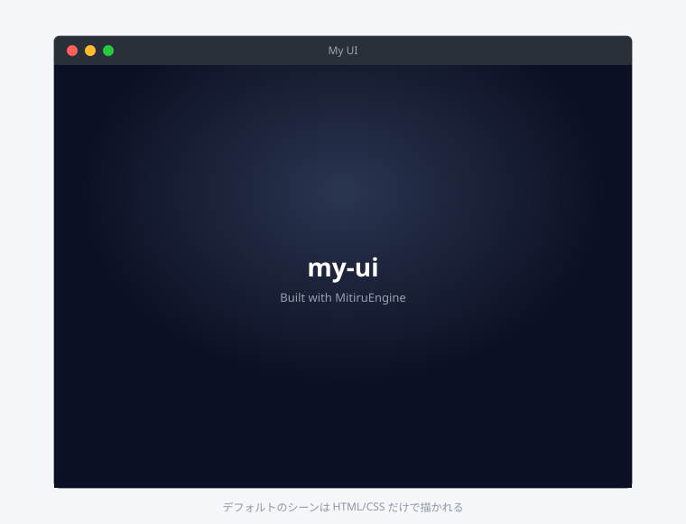
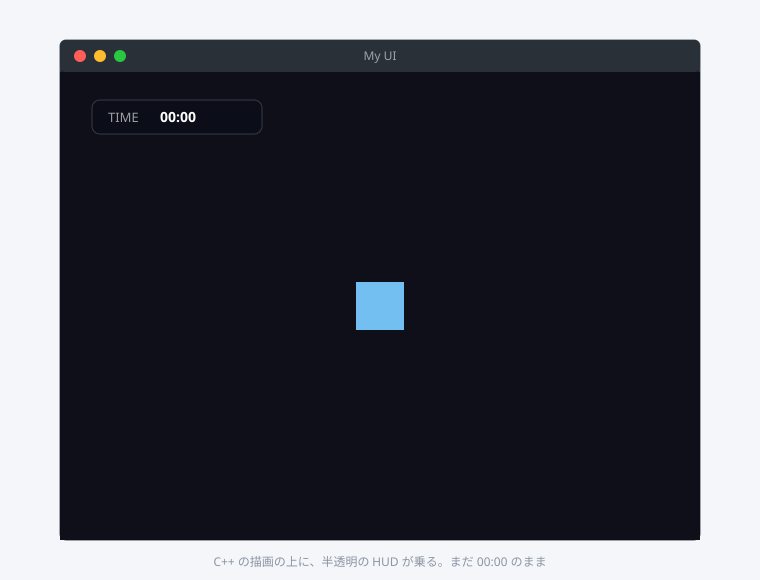

01 で作った C++ ゲームの上に、HTML/CSS で組んだ 見た目だけのレイヤー を重ねるチュートリアルです。HUD バー、ダイアログ、メニューなど、Web のデザイン資産を活かしたい部分はここに乗ります。
このチュートリアルでは「中身は C++、画面は HTML / CSS、橋渡しは薄く」という MitiruEngine の標準形を実際のコードで体験します。
時間の目安は 20 〜 25 分。先に 01 を済ませてください ── このチュートリアルは 01 で書いた純 C++ コードに UI を被せる前提で進みます。
できあがるもの
- 黒い背景の上に、C++ で描いた水色の矩形 (前のチュートリアルと同じプレイヤー)
- 画面の上に、HTML/CSS で組んだ HUD バー
- HUD には「経過時間」が表示され、毎フレーム C++ から更新される

役割分担をはっきりさせる
書き始める前に、それぞれの担当を整理します。これがすべての判断のもとになります。
| やること | どこに書く |
|---|---|
| 経過時間を数える | C++ (Game::update) |
| プレイヤーや背景の描画 | C++ (Game::draw) |
| HUD のレイアウトと見た目 | HTML / CSS |
| HUD に値を書き込む | JS (受け取って DOM に貼るだけ) |
| 「次は何が起きるか」を決める | C++。JS では決めない |
ゲームのロジックを JS に書かない、これが一番大事です。JS は受け取って表示するだけ。HTML / CSS / JS は 「画面のレイアウトと見た目を作るための道具」 だと割り切ってください。値を進めるとか、勝敗を判定するとか、そういう仕事は C++ にぜんぶ寄せます。
手順 1: ひな型を作る
CEF を含むデフォルトテンプレートでひな型を作ります。
mitiru new my-ui
cd my-ui

手順 2: そのまま走らせる
中身を変える前に、ひな型を走らせて初期画面を確認します。
mitiru run

ここまでで、CEF レイヤーが画面に乗ることが確認できました。
手順 3: C++ で背景とプレイヤーを描く
src/main.cpp を開いて、C++ で背景と矩形を描くコードに書き換えます。01 と同じ流儀です。
#include <mitiru/Mitiru.hpp>
class MyGame final : public mitiru::Game {
public:
mitiru::Size layout(int w, int h) override { return {w, h}; }
void update(float dt) override {
m_elapsed += dt;
}
void draw(mitiru::Screen& s) override {
const float w = static_cast<float>(s.width());
const float h = static_cast<float>(s.height());
s.drawRect({0, 0, w, h}, {0.06f, 0.06f, 0.10f, 1.0f});
s.drawRect({w * 0.5f - 24, h * 0.5f - 24, 48, 48}, {0.45f, 0.75f, 0.95f, 1.0f});
}
private:
float m_elapsed = 0.0f;
};
int main() {
mitiru::Engine engine;
MyGame game;
mitiru::EngineConfig cfg;
cfg.title = "My UI";
cfg.windowWidth = 800;
cfg.windowHeight = 600;
cfg.cefStartUrl = "assets/scene.html";
cfg.skipDefaultFont = true;
engine.run(game, cfg);
}
ここまでで mitiru run すると、ひな型の HUD はそのままで、C++ の描画は HTML の 下 に隠れてしまいます。HTML が画面いっぱいに不透明な背景を持っているからです。次の手順で HTML を「透ける HUD」に作り直します。
手順 4: HTML を「透ける HUD」に作り変える
assets/scene.html を開いて、画面いっぱいの背景をやめ、上部に細い HUD バーだけを残すように書き換えます。
<!DOCTYPE html>
<html lang="ja">
<head>
<meta charset="utf-8">
<title>My UI</title>
<style>
html, body {
margin: 0;
height: 100%;
background: transparent; /* 中身が透ける */
font-family: "Noto Sans JP", "Hiragino Sans", "Yu Gothic", system-ui, sans-serif;
color: #fff;
overflow: hidden;
}
.hud {
position: fixed;
top: 16px;
left: 16px;
padding: 6px 14px;
background: rgba(8, 12, 24, 0.55);
border: 1px solid rgba(255, 255, 255, 0.18);
border-radius: 8px;
backdrop-filter: blur(6px);
font-size: 14px;
letter-spacing: 0.04em;
}
.hud__label { opacity: 0.6; margin-right: 0.6em; }
.hud__value { font-weight: 700; font-variant-numeric: tabular-nums; }
</style>
</head>
<body>
<div class="hud">
<span class="hud__label">TIME</span>
<span class="hud__value" id="hud-time">00:00</span>
</div>
<script src="../../../web/mitiru_runtime/mitiru_runtime.js"></script>
<script>
// C++ から push された scene.time を受け取って DOM に貼るだけ。
// 「次に何をするか」は決めない。決めるのは C++ 側。
window.mitiru.onStateChange('scene.time', (value) => {
document.getElementById('hud-time').textContent = value;
});
</script>
</body>
</html>
background: transparent にしたことで、HTML レイヤーの下にいる C++ の描画 (背景 + プレイヤー矩形) が見えるようになります。HUD は画面の左上に半透明の小さなバーとして残ります。
mitiru run でこの段階を確認:

手順 5: C++ から値を push する
src/main.cpp を書き足して、毎フレーム経過時間を scene.time という名前で JS に push します。
#include と MyGame を次のように変更してください。
#include <mitiru/Mitiru.hpp>
#include <mitiru/cef/StateStore.hpp>
#include <cstdio>
class MyGame final : public mitiru::Game {
public:
mitiru::Size layout(int w, int h) override { return {w, h}; }
void onStart() override {
// CEF コンテキストから StateStore を作る。
// これが C++ → JS の唯一の経路になる。
if (auto* eng = engine()) {
if (auto* ctx = eng->cefContext()) {
m_store = ctx->makeStateStore();
}
}
}
void update(float dt) override {
m_elapsed += dt;
// "MM:SS" に整形して JS 側に push する。
const int total = static_cast<int>(m_elapsed);
char buf[8];
std::snprintf(buf, sizeof(buf), "%02d:%02d", total / 60, total % 60);
if (m_store) {
m_store->set("scene.time", std::string{buf});
}
}
void draw(mitiru::Screen& s) override {
const float w = static_cast<float>(s.width());
const float h = static_cast<float>(s.height());
s.drawRect({0, 0, w, h}, {0.06f, 0.06f, 0.10f, 1.0f});
s.drawRect({w * 0.5f - 24, h * 0.5f - 24, 48, 48}, {0.45f, 0.75f, 0.95f, 1.0f});
}
private:
float m_elapsed = 0.0f;
std::unique_ptr<mitiru::cef::StateStore> m_store;
};
ポイント:
- C++ 側は値を 持って整形して push する だけ。HTML の
<span>の存在も、CSS のスタイルも知らない。 - JS 側は
mitiru.onStateChangeで値を 受け取って DOM に書き込む だけ。「経過時間を進める」 判断はしていない。 - 名前 (
scene.time) を介して薄くつないでいる。これが signal-only bridge です。
もう一度 mitiru run:
何が分かったか
- 見た目の凝った部分は HTML / CSS に置ける。グラデーションも
backdrop-filterも、Web の道具がそのまま使えます。 - 値の本体は C++ にあります。JS はそれを表示するだけで、状態は持たない。
- C++ と JS のあいだは state 名 1 個 で繋がっています。複雑なメッセージプロトコルは要りません。
やってはいけないパターン
- JS 側で
setIntervalを使って自前で時計を進める ── 状態の二重管理になり、画面と中身がズレた瞬間にデバッグが地獄になります。時計は C++ 側だけ。 - HTML / CSS / JS に当たり判定やゲームのルールを書く ── HTML/CSS は 画面の構造とデザイン を表現するための道具で、ゲームのルールを記述する道具ではありません。混ぜると見た目を直したいだけのつもりがゲームの挙動も壊す、という事故が起きます。ルールは C++ 側だけ。
次の一歩
- 複数の値を push してみる:
scene.scoreやplayer.hpも同じ書き方で増やせます。 - 画面を切り替える: 別の HTML ファイルに
cefStartUrlを差し替えるか、JS 側で別の<div>を表示する、どちらでも作れます。シーンの遷移ロジックは C++ 側 (SceneRouter) に置くのが定石です。 - JS から C++ に「クリックされた」と通知する:
window.mitiru.dispatch('action.next')を JS から呼んで、C++ 側でstore->onAction("action.next", ...)で受ければ、ボタン UI から C++ のロジックを動かせます。これも signal-only — JS は「何が起きたか」しか伝えません。